Structuring organization, access, integrations, usage and platform operations into one manageable administration experience.
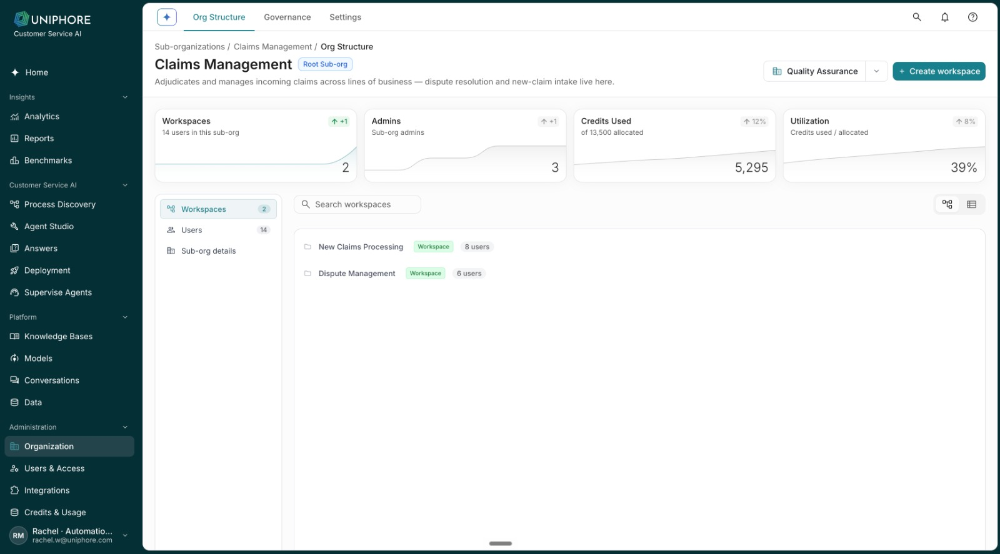
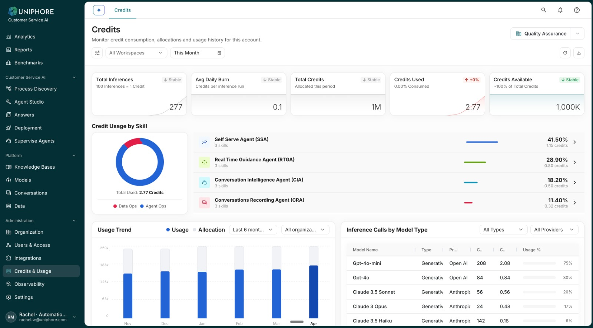
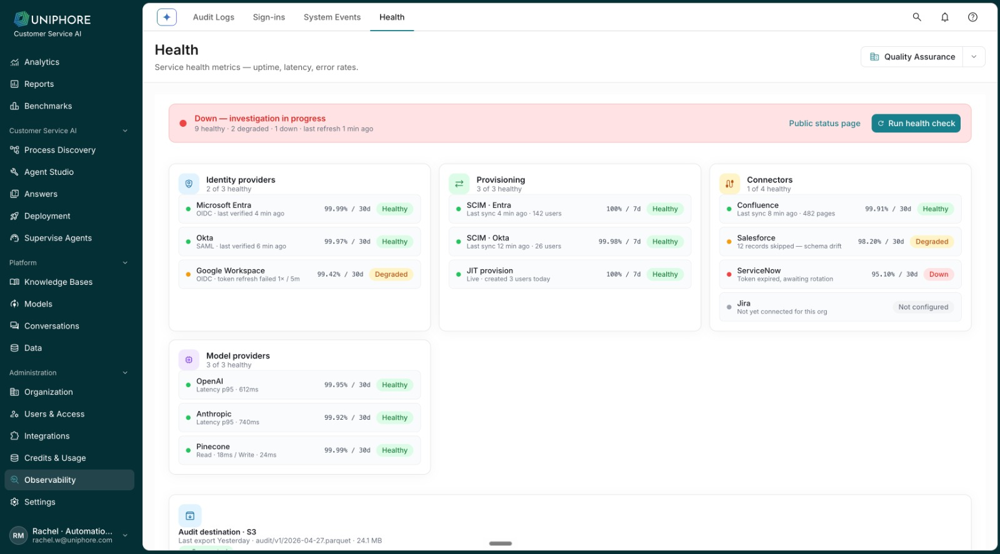
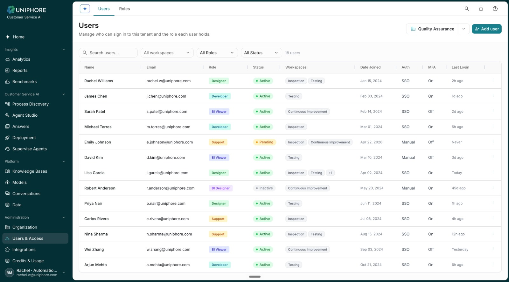
Background
An enterprise AI platform isn't only about building AI experiences. Someone also has to manage the organization behind them — users, permissions, workspaces, integrations, usage, security and system health.
The Administration experience needed to bring these responsibilities into a structure that could scale without becoming one large settings menu.
Information architecture
Administration contains very different kinds of tasks. The navigation needed to represent clear administrative responsibilities — not expose a long flat list of technical configuration pages.
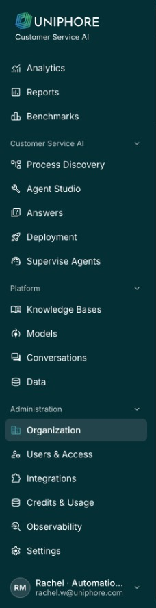
“Group by the administrator's responsibility, not by the underlying system.”
Organization
For enterprise customers, administration can exist across organizational levels. The Organization area gives administrators a starting point for understanding the sub-organizations they can manage and moving into the relevant context.
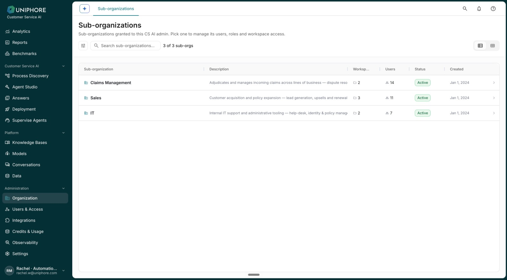
Once inside a sub-organization, the experience surfaces the most important context first — workspaces, administrators, credits used, utilization, users and sub-organization details. A workspace selector in the header keeps that context as administrators move across areas.
Governance
As AI systems take actions, some may require human review. Governance sits within the organizational context rather than as a separate experience — the Human-in-the-Loop queue surfaces high-risk actions that require administrator approval or rejection.
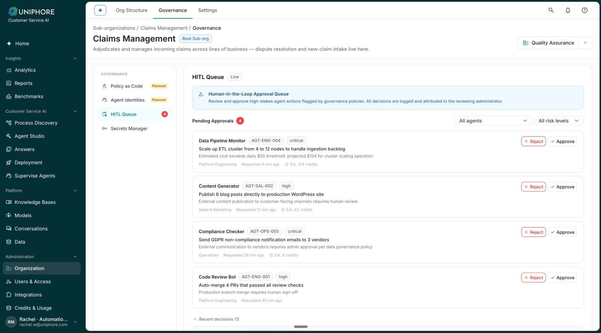
Users & access
Users answers “who has access?” Roles answers “what are they allowed to do?” Keeping identity and authorization as separate, related surfaces makes access easier to understand as organizations grow.
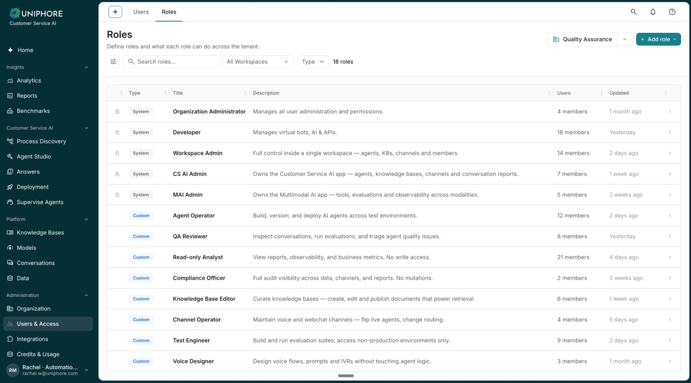
Separating identity from authorization makes access easier to understand and manage as organizations grow.
Integrations
AI systems rarely operate independently. Administrators need visibility into the external systems the platform depends on. Connectors organizes integrations by operational state — In Use, Available, Requested, Catalog — and each active integration surfaces its health and the actions administrators are most likely to need.
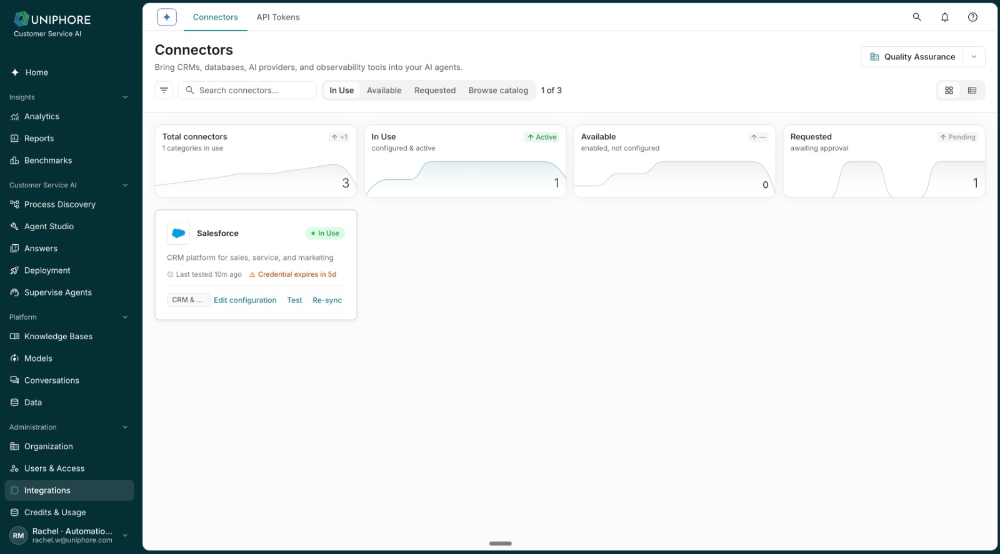
Connectors manage integrations as products or services. API Tokens manage programmatic access to the platform itself — a related but distinct concern.
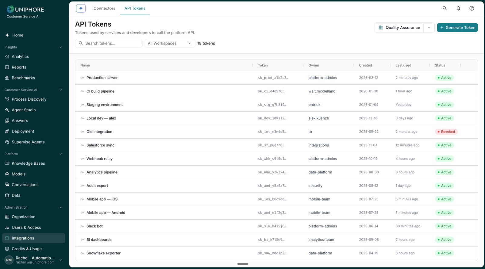
Credits & usage
AI introduces a new administrative concern: consumption. Administrators need to understand not only whether the system is working, but how platform capacity is being consumed — total inferences, daily burn, allocation, usage by skill, usage trend and model-level consumption, all in one place.
Start with the health of the account, then let administrators investigate where consumption is coming from.
Observability
Audit Logs, Sign-ins, System Events and Health look similar at first glance, but they answer four different administrator questions.
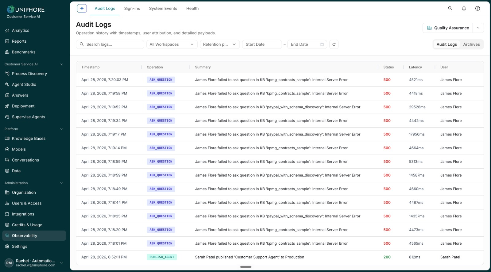
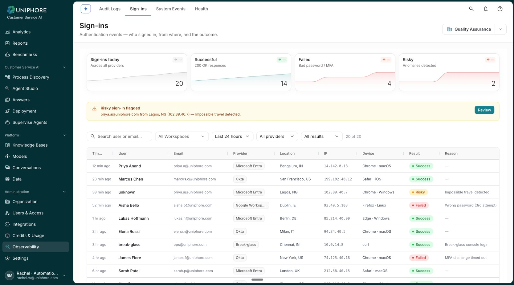
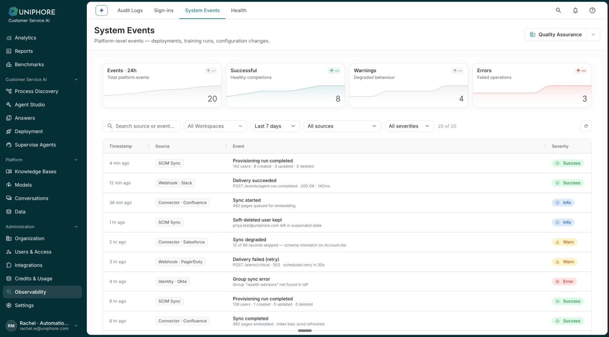
Settings
Settings contains platform-level configuration that affects multiple areas rather than everyday operational management — grouped into Account, Provisioning, Applications, and Data & Security.
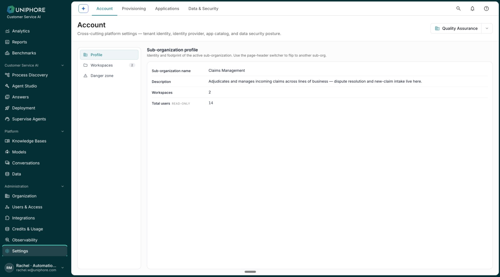
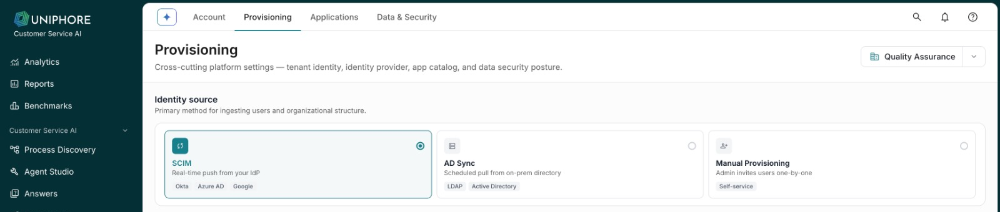
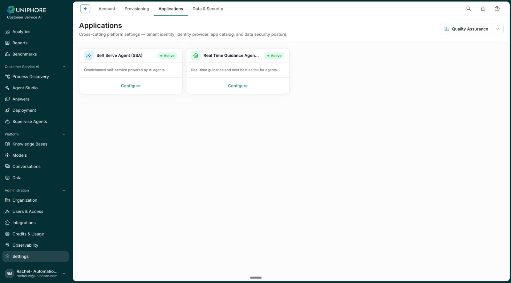
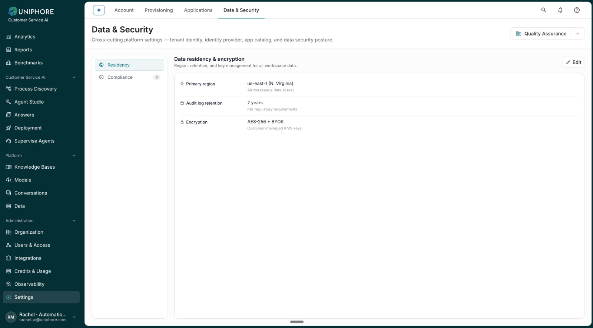
The system behind the screens
The goal wasn't simply to place configuration screens under an “Admin” label. It was to give administrators a predictable way to understand where different responsibilities belong.
My contribution
I contributed to structuring and designing the latest Administration experience, working within the broader platform and design-system direction.
The goal was to make a technically complex platform feel understandable: where organizations are structured, where access is controlled, where systems connect, where consumption is monitored, and where administrators go when something goes wrong.